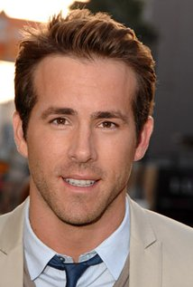

Em 6 de abril de 2016 Ryan Reynolds assinou oficialmente como protagonista desta sequência. Negasonic Teenage Warhead, Colossus e Dopinder são os únicos personagens confirmados até o momento.O Lançamento estava marcado para Nov/2017, mas com a saída do diretor Tim Miller o estudio não quis criar espectativas nos fãns.